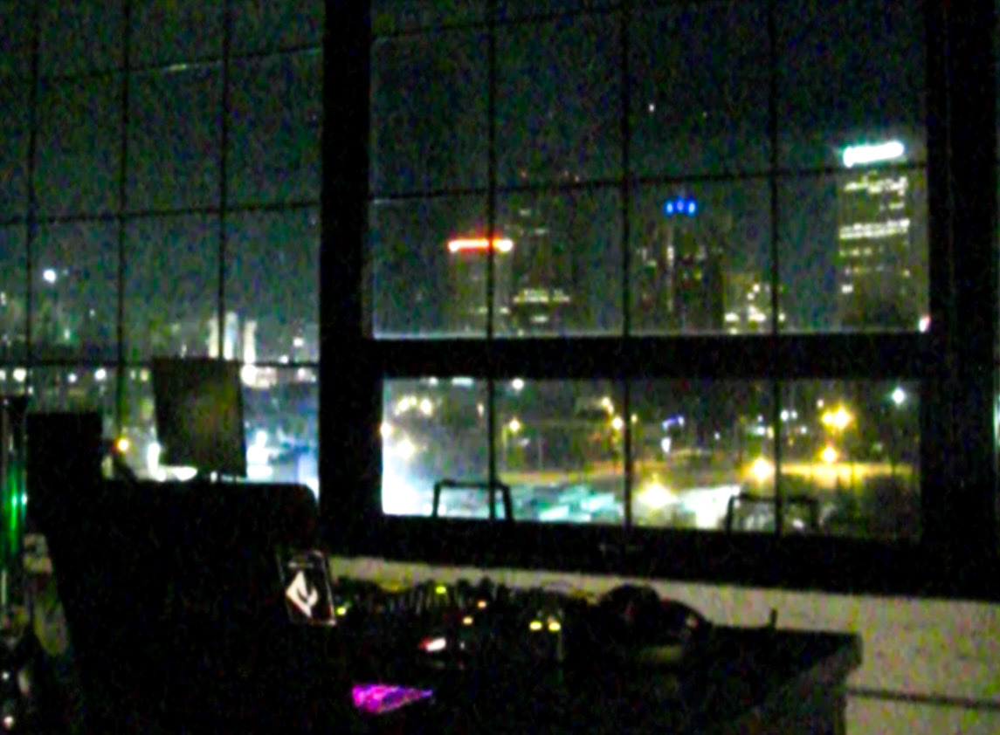

12.e is an immersive deep listening system designed and built by lifeaudio, it is made up of 12.2 channels and its spherical structure allows the user to have a three-dimensional listening experience, as well as the spatialization of sound objects within space. in its entirety it offers a full range of frequencies that allows detailed listening with high sound quality for any object played within this system.
12.e it is a cutting-edge proposal since, from its constructive and technological values, it implements initiatives never before presented, a system with this level of complexity and sophistication had never been democratized.
12.e listening room - scheduled listening sessions are offered weekly from our vinyl record collection, each session is the playback of a complete album.
